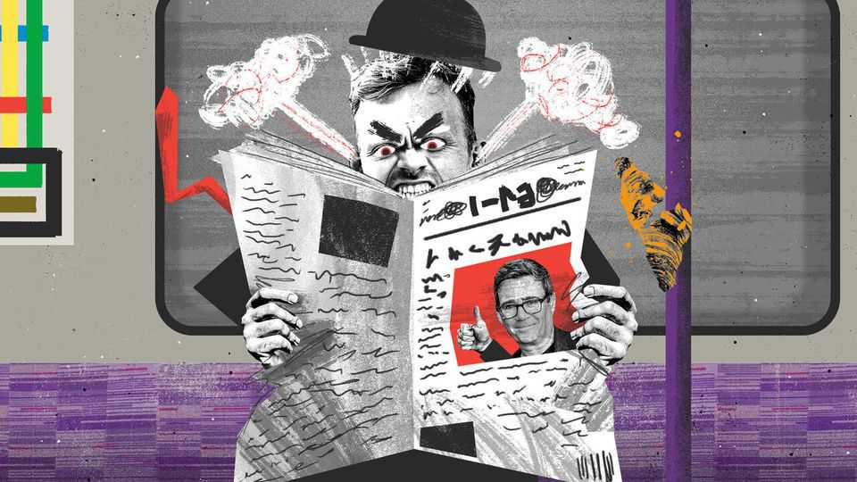

The ascent of the chippy southerner
Andy Burnham offers something precious to the south: grievance
July 2nd 2026

Andy Burnham is not yet prime minister, but the backlash against his rule has already begun. When Mr Burnham outlined his vision for Britain he did so in Manchester, the de facto capital of the north, where he was mayor for almost a decade. His ruling creed is Manchesterism, which blends stakeholderese (“UK plc”) with soppy references to The Smiths, a Mancunian band from Mr Burnham’s teenage years. To cement the shift of power away from Britain’s south, Mr Burnham pledged to create “Number 10 North”, shifting the prime minister’s abode from Downing Street to the north, for a few days a week at least.
It provided ammo for those who seek to paint Mr Burnham as little more than a “chippy northerner”. Chippiness, that blend of grievance, resentment and paranoia about a disconnected elite, is fundamental to Mr Burnham’s worldview. But his rise to power does not represent the triumph of the chippy northerner. Instead, British politics is witnessing the birth of something more novel and more potent. Chippiness, a state of mind once associated only with the north and the Celtic fringe, has spread to Britain’s south. Behold the ascent of the chippy southerner.
Where there is chippiness, there is usually truth. The causes of the regional grumpiness are real enough. “It’s Scotland’s oil”, ran the slogan of the Scottish National Party (SNP) in the 1970s, when proceeds from the North Sea’s reserves began to flow into the Treasury in London, helping subsidise Margaret Thatcher’s painful economic reforms that hit Scotland hard. Likewise, the north of England really does lose out when it comes to investment. Mr Burnham dislikes the “Green Book”, the Treasury’s rulebook, which he claims pushes too much investment south. The result is the technocrat’s version of Matthew 13:12: “Whoever has will be given more, and he will have an abundance. Whoever does not have, even what he has will be taken away from him.”
And so it is for the south. It bankrolls Britain. Fiscal transfers from London and the south-east to the rest of Britain amounted to about £60bn ($80bn) in 2023. It is the equivalent of the defence budget. If London and the south-east were an independent unit, it would be one of Europe’s richest countries. If London were a city state, it could build an Elizabeth Line, the 73-mile (117km), £20bn east-west line in the capital, twice over every year. Does anyone say “thank you” for this largesse? Do they heck. Cash flows in one direction; contempt in the other.
Genuine grievance can easily morph into paranoia. Mr Burnham explained this worldview in “Head North”, a memoir-cum-manifesto, accusing southern elites of divide and rule: “They do it because they fear nothing more than the regions and nations uniting in common cause against a system that doesn’t have their interests at heart.” A paranoid worldview already dominates among chippy southerners. Take Mr Burnham at his word and devolution is a world in which the likes of London are probably better off. If London had the powers, it would borrow its own money or levy its own taxes and, say, build a Bakerloo extension, rather than begging the Treasury for a handout. Yet chippy southerners see devolution as little more than redistribution in disguise; a ruse for greedy northern bastards to snatch what they can. It was Scotland’s oil, but it’s London’s money!
Why should chippiness be reserved only for the relatively poor? In the rest of Europe, it is a rich man’s game. In Belgium, for instance, rich Flemings grumble about lazy Walloons. Whenever Britain does something London does not like, wry cries for London’s independence emerge. Calls for Londexit flared after the Brexit vote, when London was the only region in England to vote to remain in the EU. Chippiness has long lurked in the southerner’s soul. Now, thanks to Mr Burnham, it has come to the surface.
To see chippiness as only a tool to belittle is to misunderstand its potency. No one knows this better than Mr Burnham, who cemented himself as the voice of a rebellious north during covid-19. Throughout the pandemic, he referred to Greater Manchester as District 12 after “The Hunger Games”, a dystopian tale in which children from the outer regions are forced to fight to the death for the entertainment of those in the capital. Soon he will be in Downing Street (or a co-working space in Manchester).
Channelling chippiness is the shortest path to power in Britain, as Mr Burnham shows. Scotland has become a one-party nation, with not even cartoonish scandals able to dislodge the SNP from power. Resentment lurks at the heart of Plaid Cymru’s rise in Wales. So who will speak for the chippy southerner? The fight has already begun. For both the Conservatives and the Liberal Democrats, the path to power runs through the chippy south, speaking to the disaffected left-behind from Oxfordshire to Putney, who feel forgotten and ignored by a disconnected Mancunian elite.
It is only natural that if power is redistributed then chippiness will be too. “Manchesterism” will have been a success only once the name Manchester conjures as much bile as the mention of London, notes one native of Britain’s new capital. It is well on the way already. Chippiness is another product of the zero-sum thinking that dominates British politics, where the idea that everyone can be better-off is long dead. There is less money to go round. Luckily, there is always enough animosity to share.
Perhaps the best justification for Mr Burnham’s performative northernness is the reaction to his performative northernness. In this way, his pitch to the country becomes clearer: a chicken in every pot and a chip on every shoulder. What can Mr Burnham offer to the man on the Elizabeth Line, hurtling on a shiny new air-conditioned train to his job in the most prosperous part of the country? The greatest gift of all: grievance. ■
Subscribers to The Economist can sign up to our Opinion newsletter, which brings together the best of our leaders, columns, guest essays and reader correspondence.